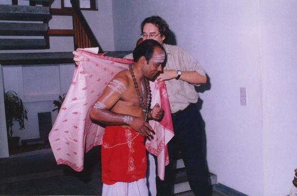
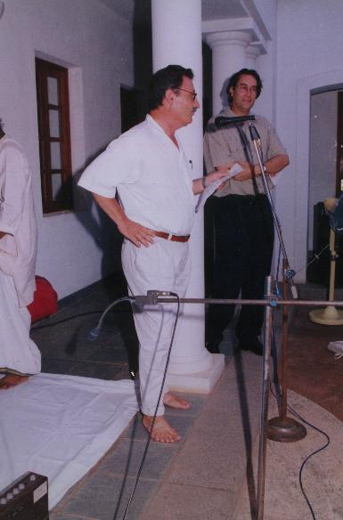
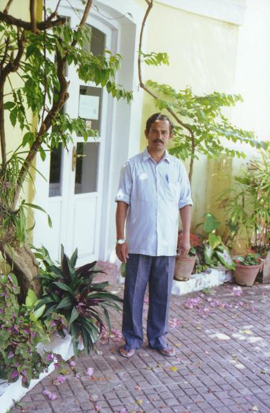
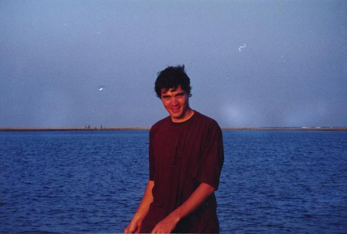
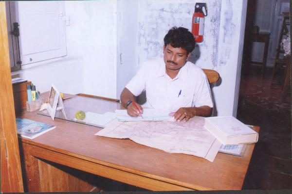
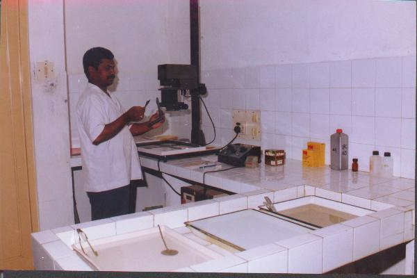
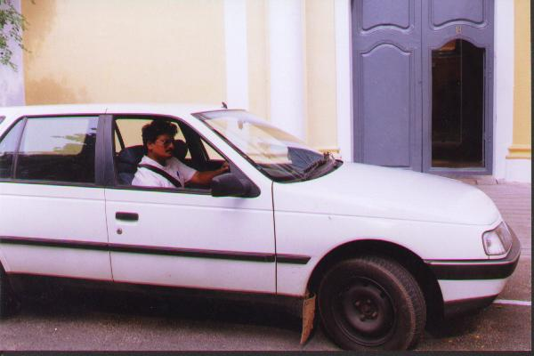

Tevaram Team Credits
Digital Tevaram is a joint effort
of many persons. This is a tentative list of all
those who were involved in it.

















- VMS: V.M. Subramanya Ayyar (IFP)
- See biography
- TVG: T.V. Gopal IYER (EFEO)
- He was the editor for the PIFI text
- François GROS (EPHE-EFEO)
- He was the co-editor for the PIFI texts. At the time
of the death of VMS, he was EFEO director:
he made a speech that was recorded
and that you can listen to now.
- VAIDEHI (IFP)
- She entered the first half of VMS's translation.
- RAMYA (IFP)
- She entered the second half of VMS's translation.
- Shanti (EFEO)
- She entered some place names.
- S.A.S. SARMA (EFEO)
- He had a crucial role at many stages
of this project and was involved in many of its
aspects.
- Mr SAMBANDAN
- He sang many of the padigams that are recorded here.
- Mr Sundaresam Pilli
- He was teaching a Tevaram class in Pondicherry;
he also sang some padigams
- Mr Sivabalan
- He also sang some padigams
- Dharmapuram Adinam Students
- They sang some padigams
- François HOULLIER
- IFP director, upto 1998
- Denis DEPOMMIER
- IFP director, from 1998 onwards.
- François GRIMAL (EFEO/IFP)
- He allowed the project to be carried on
at a good pace in the Pondicherry Indology center
by alloting the human ressources.
- RAVI: G. RAVINDRAN (EFEO)
- He took some of the pictures
- Shariff
- He was the driver for some missions
- G. JAYAPALAN (IFP, Geomatics Lab)
- He was in charge of the huge work
of determining the coordinates
of all the 276 talam-s
- Ratnadeep DATTA, alias RATAN (IFP, Geomatics Lab)
- He collaborated with F. LEMAIRE
for creating maps.
- Filiduro LEMAIRE, alias FILI(IFP, Geomatics Lab)
- He was the min person responsible
for creating (on GIS system) the grid map, the degree maps,
the half-degree maps and the quarter-degree maps.
- N. RAMASWAMY [alias BABU] (EFEO)
- He created the taluk maps
and he was also the driver for several missions
- L. DORAIRADJ (EFEO)
- He was the drughtsman for the taluk maps.
- Charlotte SCHMID (EFEO)
- She visited some tevaram sites and had pictures taken.
- P.B. SESHADRI (IFP)
- He helped in retracing VMS's biography
- Mrs NAGALAKSHMI
- Daughter of VMS, she gave the detils about her father's biography.
- JLC: Jean-Luc CHEVILLARD (CNRS-EFEO-IFP)
- He was the project coordinator